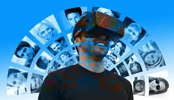
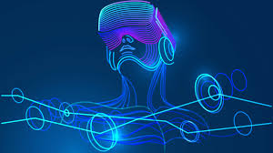
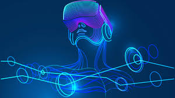
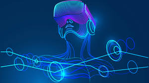

Extended Reality(XR) is a term referring to all real-and-virtual combined environments and human-machine interactions generated by computer technology and wearables.
It includes representative forms such as Augmented Reality (AR) and Virtual Reality (VR) and the areas interpolated among them.
Augmented Reality
.jpeg)
- Augmented Reality (AR) is a perfect blend of the digital world and the physical elements to create an artificial environment.
- AR uses computer vision, mapping as well as depth tracking in order to show appropriate content to the user. This functionality allows cameras to collect, send, and process data to show digital content appropriate to what any user is looking at.
- In Augmented reality, the user's physical environment is enhanced with contextually relevant digital content in real-time. You can experience (AR) augmented reality with a smartphone or with special hardware.
Uses:
- AR apps are being developed which embed text, images, videos, etc.
- Used in printing & AD industries
- allows you for the development of translation apps that helps you to interpret the text in other languages for you.

 




Virtual Reality

- Virtual Reality (VR) is a computer-generated simulation of an alternate world or reality. It is used in 3D movies and video games. It helps to create simulations similar to the real world and "immerse" the viewer using computers and sensory devices like headsets and gloves.
- The focus of virtual reality is on simulating the vision. The user needs to put a VR headset screen in front of his/her eyes, therefore, eliminating any interaction with the real world.
- In VR, two lenses are placed between the screen. Users need to adjust eyes based on individual movement of the eye and it's positioning. The visuals on the screen can be rendered by using a HDMI cable connected to PC or mobile phone.
Uses:
- Used to build and enhance a fictional reality for the gaming world.
- Used by the military for flight simulations, battlefield simulations, etc.
- Used as a digital training device in many sports and to help to measure a sports person's performance and analyse their techniques.